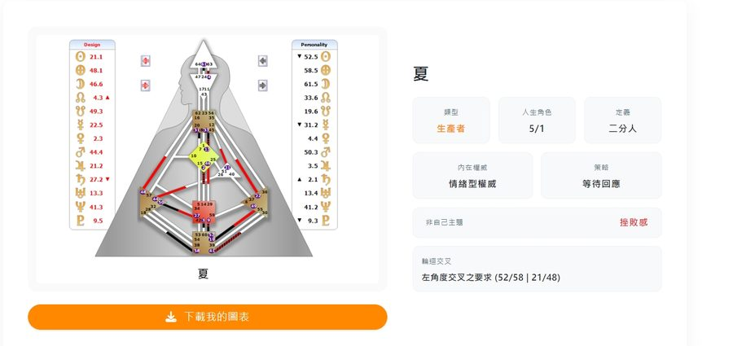
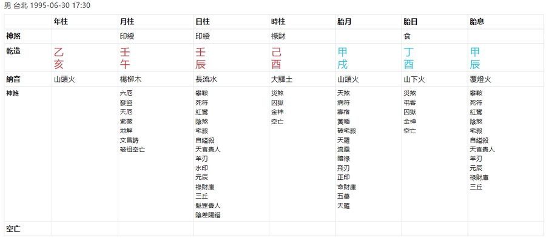
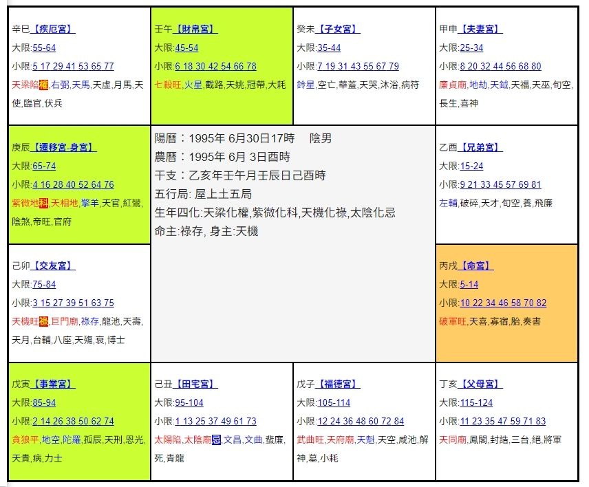

📸 不知道要截圖哪裡？
照下面每種系統的範例，把整張圖完整截下來（不用裁切），傳給 AI 引導員就可以了。
🌌 西洋占星（占星之門）
產生本命盤後，把「太陽、月亮、水星⋯⋯」這整張行星／星座／宮位對照表完整截下來。

🧬 人類圖（Human Design Asia）
把左邊的人體圖，跟右邊「類型、人生角色、內在權威、策略」整個區塊一起截下來。

🀄 八字（知命網）
把「年柱、月柱、日柱、時柱」那張完整的命盤表格截下來。

🔯 紫微斗數（Windada）
把整張十二宮的命盤截下來，中間出生資訊那格也要包含在內。
